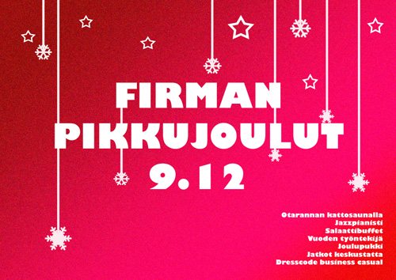

:: Firman pikkujoulut :
{kind=link}
Kulunut vuosi ollut yrityksellemme loistava! Kasvu on ollut noin 20% niin työntekijöiden määrässä ja liikevaihto on kuluneen vuoden aikana kasvanut ennätyksellisiin lukemiin, lähes 90% kasvu viime vuodesta. Athene Oy:llä menee nyt lujaa! Koko H2 on ollut vauhdikasta menoa, mutta varsinainen potti räjäytettiin Q4:llä, jolloin yrityksemme järjesti menestyksekkäät vuosijuhlat!
Keskiviikkona 9.12. on se päivä, jota olette odottaneet koko kuluneen työvuoden! Tuona päivänä yrityksemme Athene Oy järjestää koko henkilöstölleen pikkujoulut, joista tullaan puhumaan seuraaviin pikkujouluihin asti. Ohjelmassa on ruokaa, juomaa, glögiä, musisointia ja hauskaa yhdessäoloa. Myös sauna on päällä halukkaille, pyyhkeet tarjoaa firma. Pukukoodi on asiallinen, mutta pikkujouluisen rento business casual.
Ota mukaan noin 2 € arvoinen lahja, mikäli haluavat satunnaisen kanssatyöntekijän muistavan myös sinua! Tilaisuudessa palkitaan myös Vuoden työntekijä ja tietysti vanhaat tuttuun tapaan myös Vuoden ph...
Pikkujoulut pidetään Otarannan kattosaunalla, josta lähdemme jatkoille Tigeriin, jossa meillä on firmamme nimi listassa.
Mikko Koski
CEO, Athene Oy
LYHYESTI:
- MITÄ: Athenen pikkujoulut teemalla firman pikkujoulut
- MISSÄ: Otarannan kattosaunalla
- MILLOIN: ke 9.12. klo 18, jatkoille Tigeriin klo 23
- DRESSCODE: Business Casual
© 2008 - 2009 Informaatioverkostojen kilta Athene ry